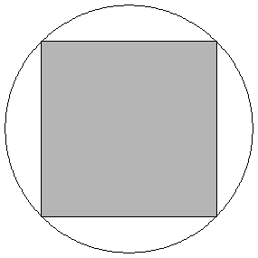
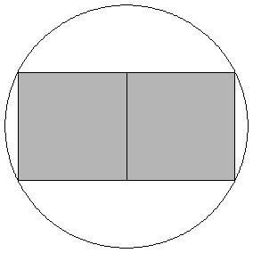
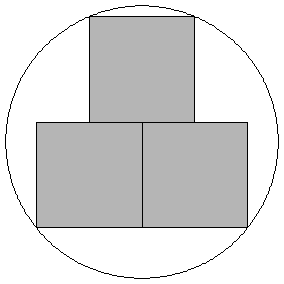
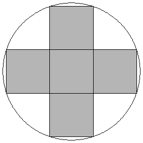
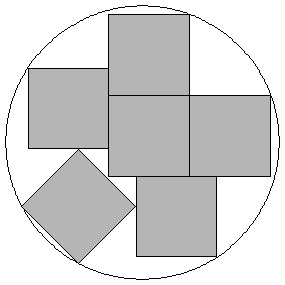

Problem A
Cricket/Football Goes Down
Input:
standard input
Output: standard output
Time Limit: 4 seconds
Memory Limit: 32 MB
The
failure of National Cricket and Football Team of Bangladesh in international tournaments
is a common incident now. So most people of
The
problem is that the hall rooms are all square shaped and the stadiums are all
circular. And the number of age groups will be less than seven. The following
pictures show how one can optimally build 1, 2, 3, 4, 5 and 6 square shaped
hall rooms in a circular stadium. You can assume that whenever the pictures
look exactly symmetric along a certain axis they are symmetric. In the 6th
figure the one square whose sides are not parallel to x or y axis is actually
rotated 45 degree.
|  |  |
|
Fig 1: When no of age group is one |
Fig 2: When no of age group is two |
|  | |
|
Fig 3: When no of age group is three |
Fig 4: When no of age group is four |
|  |  |
|
Fig 5: When no of age group is five |
Fig 6: When no of age group is six |
As
usual the big guns of the country are providing many suggestions about the
size of the hall room. Being a helpless programmer in the country (The
intelligent people are helpless) your job is to determine the minimum radius of
the stadium where N (0<N<=6)
square shaped hall rooms of length A
can be built.
Input
The
first line of the input file contains a single integer D (D<=10000) which denotes how many lines of inputs are there.
Each of the next D lines contains
one sets of input. Each set contains a floating point number A whose meaning is described in the
problem statement.
Output
For each line of input produce one line of output.
This line contains six floating point numbers r1, r2, r3, r4, r5, r6.
Here r1 denotes the minimum possible radius of the stadium when only one
hall room is built; r2 denotes the minimum possible radius of the stadium
when only two hall rooms are built. Other four numbers have similar meanings.
This radius should have eleven digits after the decimal point. A special judge
will be used to check your solution. So you need not worry about small
precision errors. To be precise you should not worry about errors less than
max(0.000000001, 0.0000001 %)
Sample Input
2
0.00000001
0.00000002
Sample Output
0.00000000707
0.00000001118 0.00000001288 0.00000001414 0.00000001581 0.00000001689
0.00000001414
0.00000002236 0.00000002577 0.00000002828 0.00000003162 0.00000003377
Shahriar Manzoor